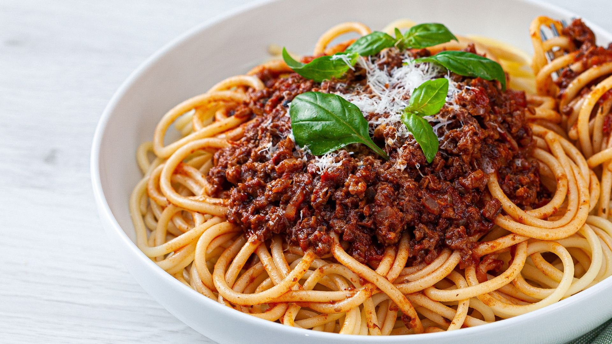

Cooking Store
На главную страницу

Ингридиенты
1. Спагетти - 150 г.
2. Фарш мясной (говяжий) - 350 г.
3. Лук репчатый - 150 г.
4. Масло растительное - 60 г.
5. Чеснок - 5 зубчиков.
6. Томат-паста - 2 ст. л.
7. Вода - 100 мл.
8. Масло сливочное - 30 г.
9. Соль - по вкусу.
10. Лист лавровый - 3 шт..
11. Зелень - по вкусу.
12. Специи - по вкусу.
Процесс приготовления
Посмотрите обучабщее видео или
следуйте инструкции ниже
Рецепт
1. Подготовить ингредиенты для спагетти болоньезе.
2. Как приготовить спагетти с соусом болоньзе: Лук нарезать кубиками.
3. На разогретую сковороду влить растительное масло и обжарить нарезанный репчатый лук.
4. Чеснок нарезать слайсами и сразу отправить половину к луку. Пассеровать 30 секунд.
5. Добавить к луку мясной фарш, обжарить.
6. Через 4 минуты влить красное сухое вино и выпарить спирт. Затем добавить томат-пасту, перемешать и уменьшить огонь.
7. Влить воду и дать испариться жидкости.
8. Заправить соус солью, специями и закинуть лавровый лист. Перемешать и тушить 10 минут.
9. На дно тарелки, в которой будете подавать макароны, порезать сливочное масло.
10. Зелень укропа и лука порезать не слишком мелко.
11. Отварить спагетти. Откинуть спагетти на дуршлаг, закрутить с помощью вилки и выложить на тарелку.
12. В конце в соус болоньезе добавить свежую зелень и оставшийся чеснок.
13. Выложить поверх спагетти горячий соус болоньезе и можно подавать. Всем приятного аппетита!
14. Поверх спагетти выложить горячий соус и можно подавать спагетти болоньезе. Всем приятного аппетита!